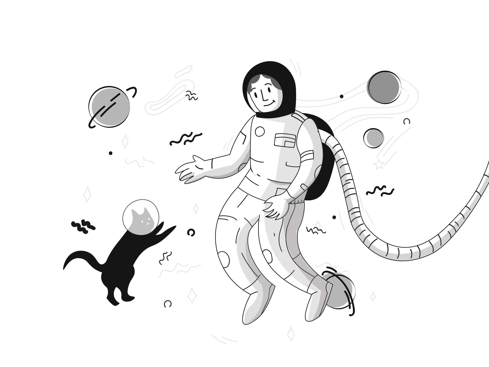

**우주와 고양이, 새로운 동행**
 30년간 기자 생활을 하며 수많은 이야기를 써왔지만, 오늘의 주제는 특별하다. 우주에 나간 고양이, "루나". 한 우주비행사의 반려묘였던 루나는 그의 곁에서 훈련을 받고, 특수 캡슐에 탑승해 우주로 향했다. 우주의 적막 속에서도 루나는 평온히 우주비행사의 불안을 달래며 새로운 가능성을 열었다. 이 작은 생명체는 인간과 동물의 새로운 연대와 탐사의 한계를 확장시킨 상징으로 남았다.